The Nayars of Kerala
A Historical and Anthropological Study of Matriliny, Caste, and Social Change in Kerala
Introduction
Chris Fuller is a social anthropologist. A Social anthropologist studies patterns of behaviour in human societies and cultures. He contributed an excellent work on Tamil Brahmins. It was highly informative.
In this 1976 study, Dr Fuller analyses fieldwork data collected among Nayars in a village in southern Kerala, a region on which there is practically no modern anthropological information. In the final section of the book, Dr Fuller looks at the traditional’ marriage system of the Nayars and offers some suggestions about its operation. He also discusses the collapse of the old joint-family system and, with the aid of his data from southern Kerala [1]. In this piece, I also broadly share about Nayars of Kerala, Geography of Kerala, and introduce theories of Origin for Caste system.
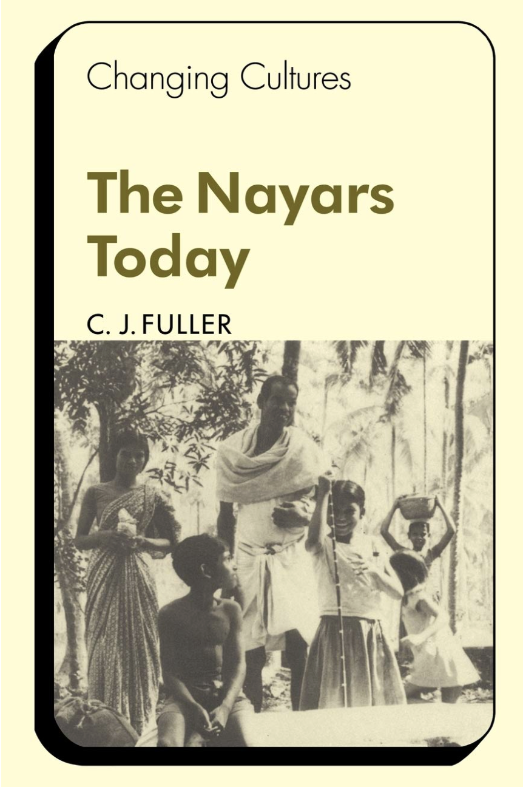
The Theme under which this work was written is to show how specific non-industrial societies have developed and changed in response to the conditions of the modern world. In the last two centuries, Modern economy, property rights, and changing political governance changed social, economic landscape of Kerala.
Geography of Kerala
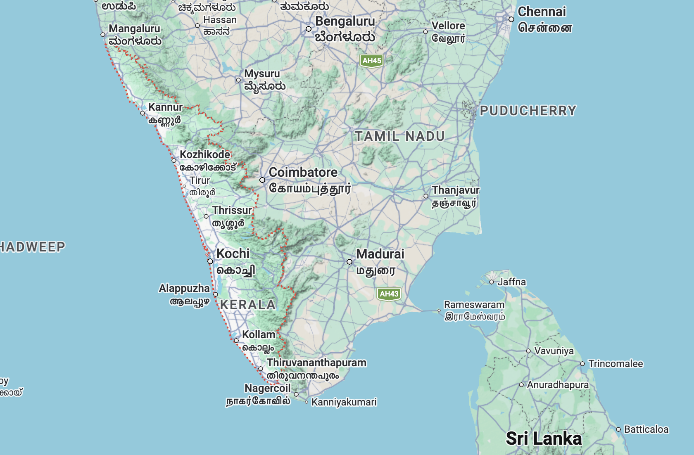
From the perception of Tamil Nadu and Tamils, Kerala is viewed as a state with milder, livable weather. It doesn’t get as hot as towns of Vellore, Chennai, Tirunelveli of Tamil Nadu. The state is bordered by Karnataka to the north, Tamil Nadu to the east, and the Arabian Sea to the west.
In terms of length, it stretches 580 km in length and area of about 38,856 square kilometers. Geographically, Kerala is divided into three distinct zones, the highland eastern region dominated by the Western Ghats mountain range, a midland region of rolling hills and fertile valleys, and a coastal lowland strip dotted with backwaters, lagoons, and beaches. The Western Ghats, which form a natural eastern wall, are home to dense tropical rainforests, wildlife sanctuaries, and some of India’s highest peaks in the south. The state is extraordinarily rich in water resources, fed by 44 rivers, most of which flow westward into the Arabian Sea — and receives one of the highest rainfalls in the country through both the southwest and northeast monsoons. The state is rich in rubber, tea, coffee, and coconut resources.
Malayalam is the official language and mother tongue of virtually the entire population. One of Kerala’s most defining demographic features is its diaspora, millions of Keralites, known as “Pravasi Malayalis,” work abroad, particularly in the Gulf countries, and their remittances constitute a massive share of the state’s income and have significantly shaped its economy and social fabric. Urbanization is steadily rising, though Kerala’s settlement pattern is unique in that even rural areas exhibit urban-like densities and access to services, blurring the traditional rural-urban divide.
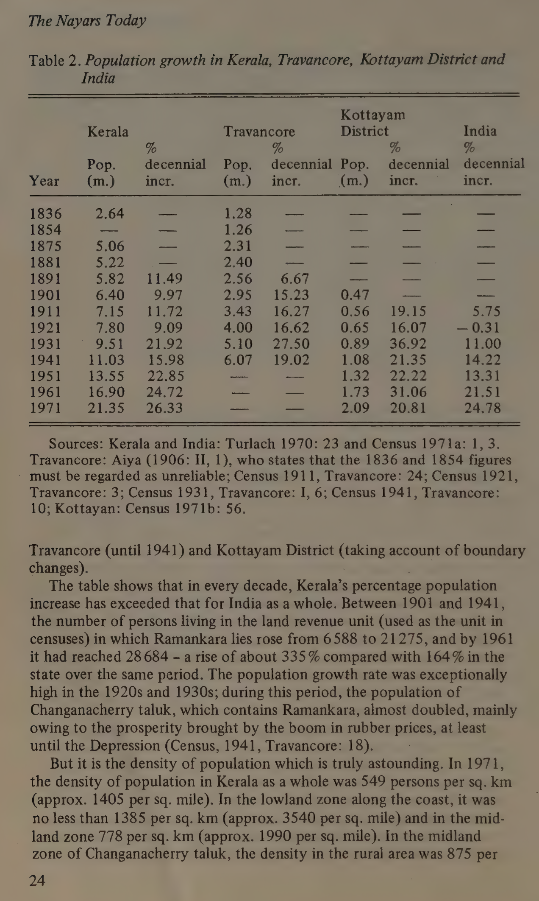
Despite its modest geographic size, Kerala is one of India’s most densely populated states, with a population of approximately 35 million people as per recent estimates. The population density is among the highest in the country at over 850 persons per sq km. What sets Kerala apart demographically is its unusually high level of human development. The state boasts a literacy rate of around 96%, the highest in India, along with the country’s best health indicators, including low infant mortality, high life expectancy (around 75 years), and an extensive public health infrastructure. Kerala also has a notably high female-to-male sex ratio, consistently one of the best in India at around 1,084 females per 1,000 males, a stark contrast to the national average. In demographics, Hindus form the majority at roughly 55% of the population, followed by Muslims (around 27%) concentrated largely in the northern Malabar region, and Christians (around 18%) predominantly in the central and southern districts.
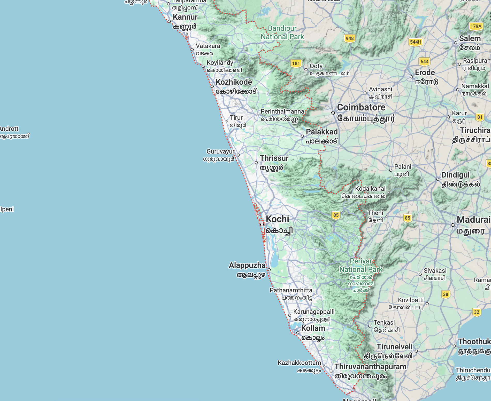
The Western Ghats run roughly parallel to India’s west coast and act as a major monsoon barrier, intercepting the southwest monsoon and helping make Kerala lush and water-rich. Kerala belongs to one of the world’s great biodiversity systems. UNESCO describes the Western Ghats as one of the world’s major biodiversity hotspots.Species such as the Nilgiri tahr, lion-tailed macaque, elephant, gaur, tiger, hornbills, and many endemic plants.
In Kerala, houses are scattered across the countryside rather than arranged along streets or clustered together in compact, nucleated villages, as is common in most other parts of India [1]. For anyone lacking a novelist’s descriptive skill, it is difficult to capture the true appearance of the Keralan landscape. The most striking impression is one of dense greenness. In much of Kerala, including the Ramankara region, a well sunk about twenty feet into the ground provides sufficient water for household and agricultural use throughout the year. While the abundance of water may not directly cause the dispersed pattern of settlement, it is almost certainly the key factor sustaining it.
House of Nayars
A brief description of the houses might be desirable here[1]. Those of perhaps half the people the better-off half are built of local bricks, blocks of dried red laterite. The houses of the other half are constructed from mud and thatch. The size and type vary enormously and are primarily a function of wealth. Those of the poorest people are one roomed huts with a mud floor, sides of mud or thatch, and a thatched roof, the thatch is made of plaited palm leaf. The occupants will own a few cooking utensils, mats for sleeping on and perhaps one bed, and maybe a bench or chair. A kerosene lamp or two will provide them with light, and an odd religious print or calendar the only decoration.
The houses of the better-off have walls of brick and roofs of thatch or tiles, and vary in size from two small rooms up to perhaps six rooms with a verandah and outhouses. The wealthy live in spacious buildings which, if old, are often decorated at the front with elaborate wood-carving.

The Nayar taravad are a historically specific form of matrilineal social organization. In anthropological terms, it linked descent, property, residence, ritual obligation, and inheritance into one corporate unit, even though that unity later came under strain [1], [2]
Houses are not distinguishable by the caste of their occupants, although most Hindu homes have a brass lamp which is lit at sunset, set on the verandah or in front of the granary (usually located in the centre of the house). Scenes from Hindu epics and portraits of the most popular gods, together with those of Indian patriots such as Gandhi and Nehru, hang on the walls of most Hindu houses. Calendars, for some reason, are very popular in Kerala and almost every house has several. All houses, including those of the poorest, are kept scrupulously clean. Except for those of the very poor, every house has its own well, but only the rich and modern-minded have bathrooms and lavatories. For the majority, the ground behind the house and water from the well provide the necessary facilities, and the thick trees provide adequate privacy.
Historical Background of the Nayars
In CJ Fuller’s Nayars today [1], he describes to show the Nayars from accounts of early travelers to the state. Nair or Nayar are a category of castes from Indian state of Kerala. Centuries before Anthropologists documented Nayars, earlier records documented them as ‘Nareae’. The first description dates from fourteenth century, by Ibn Batuta, in India between 1325 and 1354. Ibn Batuta was a muslim traveler, scholar, explorer. Detailed, thorough accounts of Nairs appear from sixteenth century from travelers to Malabar Coast (Kerala), effective from 1498, Portuguese control of Arabian Sea and Spice trade from Calicut (Kozhikode).
To understand the Nayars properly, matriliny must be distinguished from matriarchy. Matriliny does not mean that women simply “ruled” society, it means that descent, lineage membership, and often inheritance were traced through the female line. As Schneider and Gough, prominent anthropologists emphasized in matrilineal systems the father does not belong to the same descent unit as his wife and children, which creates a distinctive structural tension between the conjugal family and the wider lineage. Among the Nayars, this took the form of the taravad, a corporate matrilineal descent group that organized kinship, property, and social continuity in ways very different from the later nuclear-family norm [2] [1]
Many early visitors were struck by peculiar features of Kerala Society, matrilineal, polyandrous kinship and marriage system of the Nayars, the kings, the martial prowess of the Nayars, and the extreme complexity and rigidity of the Kerala caste system.
In the past, the Nayars lived in matrilineal joint families, known as taravads. The taravad comprised all the matrilineal descendants of a common ancestress and a child, of course, belonged to its mother’s taravad. The sons’ children, however, did not belong to the same taravad. A taravad might have consisted of a set of sisters, their brothers, their children and their daughters’ children, but many taravads contained a much wider span of relatives, with about 20 to 30 members. Each taravad was an independent economic unit; its members collectively owned property from which they derived their livelihood.
The Nambudiri Brahmans, the highest-ranking caste in Kerala, also lived in joint families, called illams. Illams were very similar to taravads, except in one important respect: they were patrilineal and comprised all the patrilineal descendants of a common ancestor. The relation between the Nayars and the Nambudiris will be a constant theme of CJ Fuller’s book.
After the British annexation, a large number of Hindu landlords who had fled from Malabar during the Mysorean invasions returned to claim their estates, many of which had been cultivated in their absence by Muslims. As a result of the 1793 proclamation, almost all the land in Malabar was held by a relatively small number of landlords, most of them extremely wealthy and most of them Brahmans, former rajas or high-ranking Nayars.
In late 19th century Kerala, land systems shaped distinct regional paths. In Malabar, British policy favored private landlords (janmis), concentrating wealth at the top. In contrast, Travancore granted ownership rights to state tenants (kanamdars) in 1865, turning cultivators into landowners and accelerating capitalist agriculture. Cochin’s system resembled Malabar’s. These differences made Travancore’s economy more dynamic, empowering middle communities like Syrian Christians, Ezhavas, and Muslims. Their rise challenged the dominant Nayars and Tamil Brahmin elites, sparking social reforms, caste-based rivalries, and the emergence of early communal politics that redefined Kerala’s modern development trajectory.
Snake worship, or Nagaaradhana, is an ancient ritual deeply rooted in the spiritual and cultural life of Kerala’s Nayar community. Traditionally, every Nayar tharavad maintained a Sarpakavua sacred grove, usually positioned at the southwest corner of the compound where serpents were venerated as guardians of the household and symbols of fertility, prosperity, and continuity. Offerings of milk, turmeric, and flowers were made to the serpent deities, often represented in stone or consecrated earth mounds. The ritual reached its peak expression in ceremonies like Sarpam Thullal, a trance dance that invokes the presence of serpent spirits. Rooted in legends of Lord Parashurama, who is said to have granted land to the Nagas, this veneration also connects the Nayars to ancient serpent worshipping lineages such as the Nagavanshi.
Historical Ethnographical Accounts
In Giovanni Maffei’s accounts (1588), the fullest accounts of the Nayars’ military training and performance are described.
From the age of seven or so, he says, Nayar boys began their physical training, taking part in many exercises and massaging their limbs with sesame oil, all under the guidance of ‘ highly skilled wrestling masters’. By virtue of this training, continues Maffei, they can twist and turn ‘as if they had no. bones’. They are expert wrestlers, but are still more proficient in the use of weapons [1].
Quite how skilled they were as soldiers is not entirely clear. The Nayar armies were disbanded in the eighteenth and early nineteenth centuries. Travancore and Cochin did maintain Nayar brigades until 1947, but they were, of course, modelled on modern European armies.
Those who came to Kerala who were most astonished, for it was in this part of India that the casté system achieved its greatest elaboration and rigidity. The Social distance between the Nambudiri Brahmans at the top, and the ostracised, degraded Pulayas (the main Kerala Harijan caste) at the bottom, was immense.
The Nambudiri Brahmans, as the author describes, occupied the summit of the hierarchy. Something of their exalted status, and of the ethos of the caste system, is conveyed in this late nineteenth century description written it may be worth noting by a Tamil Brahman, His [the Nambudiri’s] tenants, all of them peaceful and contented on account of his unexacting nature, his genial manners, and considerate treatment, bow down to him not simply as a lord, but as their royal liege and benefactor, their suzerain master, their household deity, their very Goc on earth; and pay, their customary homage, with a good will and happy face generation after generation. His person is holy; his directions are commands; his movements are processions; his meal is nectar. He is the holiest of human beings. He is the representative of God on earth… Such is the popular estimation in which he is held. (Census 1875, Travancore:191).
Most travellers, however, noted that the Nayars were ranked below the Brahmans, and the kings in the caste hierarchy, and few failed to comment on the position of the Pulayas at the bottom. The Nayars’ right to kill immediately any Pulaya met on the road is attested to by virtually every visitor to Kerala, and there is little room for doubt about the accuracy of Forbes’s account. According to others, for example, Buchanan (1807: 410), Nayars killed not only. Pulayas but any member of the lower polluting castes, from Tiyyars (Izhavas) down.
A Nayar girl underwent a tali-tying ceremony before puberty. After puberty, she could form sambandham relationships with men of her own or higher status, but not lower. Fuller uses these accounts to show why outsiders became obsessed with the Nayars: a woman could have multiple partners, these relationships could be formed and dissolved with relative ease, and children belonged to the mother’s family rather than becoming heirs of a father in the ordinary patrilineal sense.
Outcasteing was the punishment for transgressing caste rules. Although in some circumstances it was followed by sale into slavery or even death. Because it was the most extraordinary of all, the author briefly describes the outcasteing procedure reserved for a Nambudiri woman accused of illegitimate sexual relations.
It was known as smartitivicaram and is described in detail. If accused a Nambudiri woman was lodged in a separate hut, for her presence inside the family house could pollute other members of her family. She was then brought before a caste court and interrogated. The court could only sit after the ’king had issued a summons, and it was held under his patronage. If the woman eventually confessed, or was judged guilty, she was asked to name all her lovers, of whatever caste.
They were then brought before the court as well, their innocence or otherwise used to be determined through the use of ordeals, such as that with boiling oil. The accused plunged his hand into the oil; if it was burnt, he was guilty. Iyer refers to a case in Cochin which at the time of his writing had taken place quite recently, and in which sixty five men. of the Brahman, Ambalavasi and Nayar castes were outcasted. (The Ambalavasis rank between Brahmans and Nayars.) The most famous trial of all, according to the stories which still circulate in Kerala, involved a notorious Nambudiri courtesan in Cochin in the 1920s whose case lasted for weeks as she proceeded to name virtually every man of substance in the city. Eventually, the raja stopped the trial because, according to all who recount the tale, his name was next on her list! Since then, so it is said, there have been no more of these trials.
In 1729, a young prince, Martanda Varma, acceded to the throne of Travancore. On his accession, the kingdom’s internal affairs were in complete chaos. owever, by the time of his death in 1758, Martanda Varma, through a series of brilliant but ruthless military campaigns, had gained control of the whole of southern Kerala, from Cape Comorin to the Piero”. Martanda Varma’s policies were an entirely new phenomenon in Kerala. He began to create a state of a recognisably modern character and, in particular, he laid the foundations of a modern bureaucracy, which although it employed some Nayars, was mainly administered by Tamil Brahmans.
Village of Ramankara
Ramankara is about eight miles from Changanacherry[1], an important market town in Central Travancore, with a with a population of about 48545 (Census 1971).
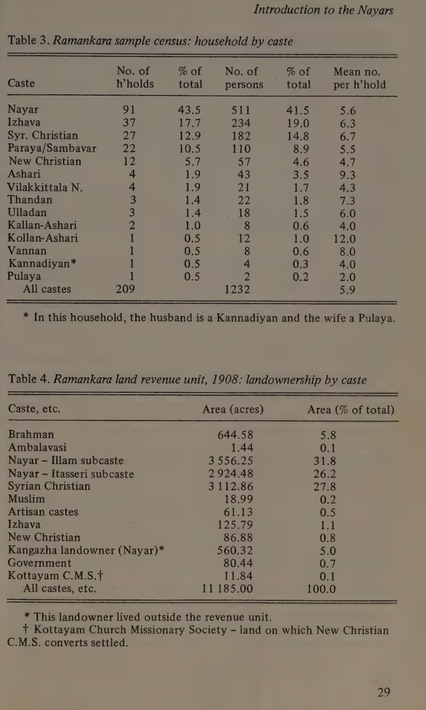
In Ramankara village (Central Travancore), Nayars make up ~35% of the 650 households, the largest single community. Other significant groups include Syrian Christians, Ezhavas, Parayas, and New Christians (low-caste converts). Smaller castes total of about 10 others. His sample census of 209 households provides the caste breakdown (Table 3). Land control defines dominance here. Nayars hold sole dominance in Ramankara (unlike broader Central Travancore, where Syrian Christians share it with them). The 1908 land settlement report (Table 4) shows Nayars and Syrians then monopolized ownership—Nayars have since lost ground.
The author’s sample data (Tables 5–7) confirms Nayars own twice their population share, controlling most village land. Ownership is highly skewed: >50% of land belongs to <10% of households; 43% to just 7 Nayar households.
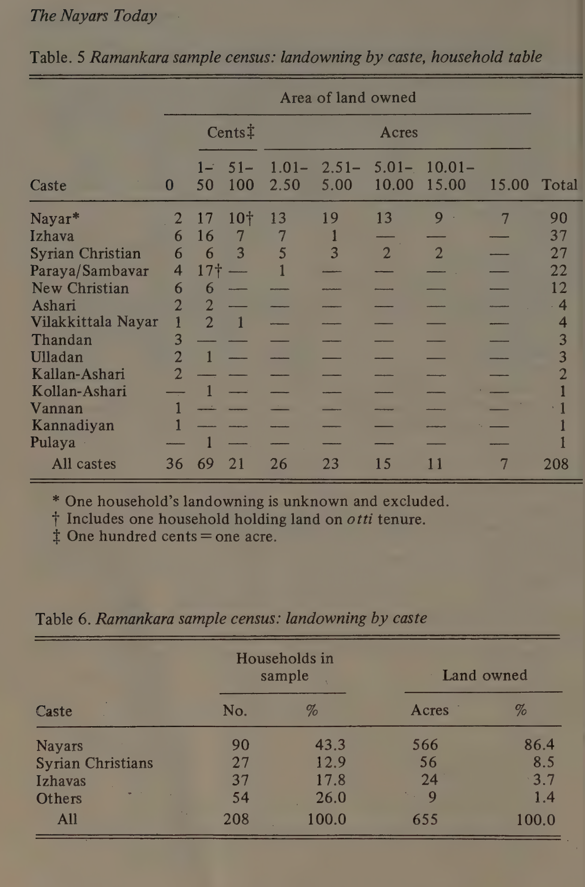
We have seen that very few Nayars in Ramankara are labourers[1], most of whom belong, as in almost all of Kerala, to the Harijan or other low-ranking castes. Most labourers are landless or own only tiny plots, few Nayars are in this. Nayars however, also loathe working, on even their own, land if they can afford not to. this disinclination to get their hands dirty is something to which they readily admit. It is certainly the case that other things being equal, Nayars work less on their farms than do, for example, Syrian Christians. Broadly speaking, male members of a Nayar household owning more than six or seven acres will not normally work on their land, whereas those owning less than this will have to out of necessity. Only in very poor households, where the men go out to work, will Nayar women labour on the land.
Castes in Kerala by Hierarchy
- Nambudiri Brahmans
- Other Brahmans
- Kshatriyas
- Samantans
- Ambalavasis
- NAYARS
- Vilakkittala Nayars, Veluthedathu Nayars
- Kammalas - including Asharis, Thattans, etc.
- Izhavas - also called Tiyyans, Thandans and Chovans
- Kaniyans or Kanisans
- Mukkuvans and Arayans
- Pulayas or Cherumans
- Parayas
- Tribal peoples
The Syrians claim descent from Nambudiri Brahmans converted by St Thomas the Apostle in A.D. 52 and are ranked just below the Nayars. The possibility that St Thomas visited Kerala cannot be entirely ruled out, although it has to be admitted that there is no certain evidence one way or the other. It is, however, indisputable that there were Christians in Kerala by the sixth century at the latest.
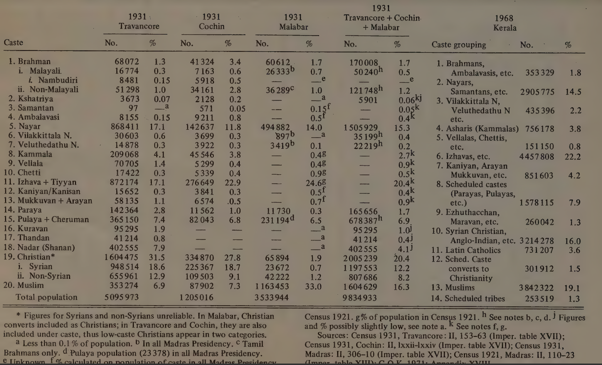
The Nayars form about 15% of Kerala’s population, making them the second‑largest caste group after the Izhavas, who constitute around 22%. Pulayas and Parayas together account for roughly 9% of the population, and most of those listed as Scheduled Castes (Harijans) in 1968 belonged to one or the other; Scheduled Caste converts to Christianity explained a further 1.5% discrepancy. In Travancore and Cochin Christians make up about 31% of the population, whereas Muslims are few there but form some 33% of Malabar’s population, compared with only about 7% in the princely states. The Nayars, like the Izhavas and Pulayas, are more or less evenly distributed across Kerala, together accounting for nearly half the state’s people. Other communities, by contrast, are unevenly spread, and this unevenness is a major source of regional variation in how the caste system actually operated. The Nambudiris, though numerically tiny, are heavily concentrated in Central Kerala, where their large landholdings (illams) and political influence likely tightened the caste hierarchy there.
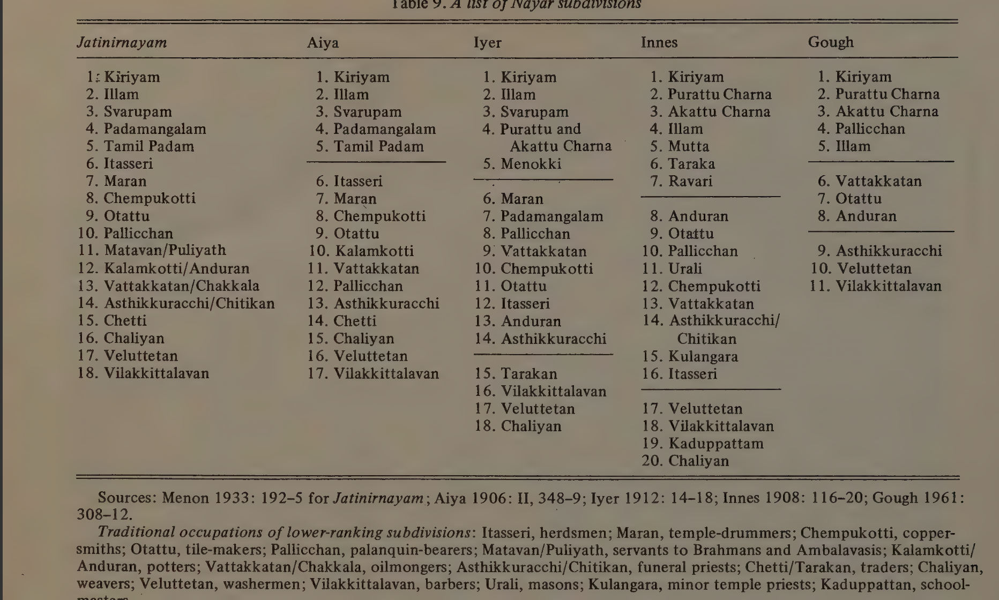
The vast majority of Nayars belonged to only a handful of large subdivisions such as Illam, Kiriyam, Svarupam, Purattu, Akattucharna, and a few others depending on region.
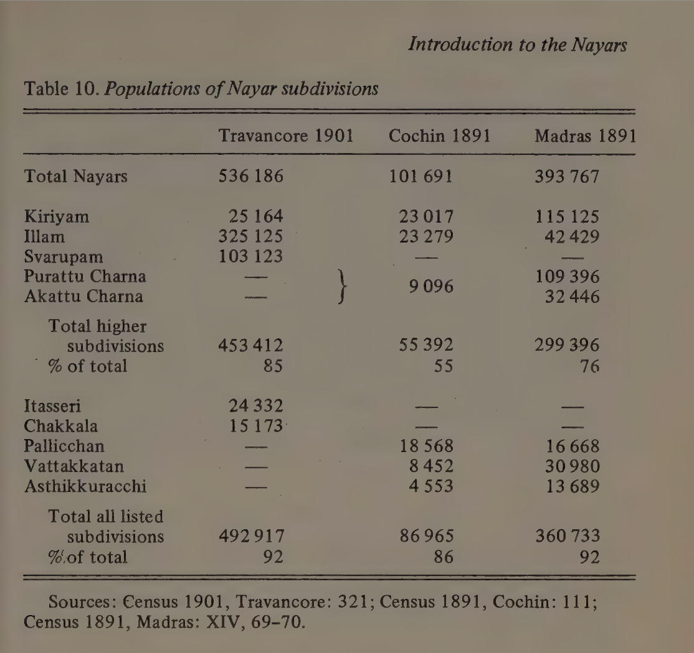
The structure of the Kerala caste system looked rigid on paper, the actual behaviour within castes, especially among the Nayars was often surprisingly flexible
People from Kerala also frequently insist that caste no longer matters, even though everyday practices such as well‑use, barbers’ shops, and lingering taboos still bear traces of inequality. Open discrimination has become rare in public spaces, but one key exception remains: washermen often refuse to clean clothes of lower‑caste groups, including artisans and Izhavas. Major turning points came in the 1920s and 1930s, especially the 1924–25 Vaikom temple satyagraha for temple‑road access and the 1925 Nayar Act, both accelerated by education, urbanisation, and economic change. While observable caste behaviour has relaxed dramatically, many older high‑caste landowners still implicitly equate low‑caste with lazy labourer, shifting discourse from caste to class while preserving prejudice; conversely, low‑caste radicals, especially young Communists, tend to interpret their position through both caste and class, keeping the contradictions of the old system alive in new political language. Even where caste behaviour has loosened, many older high caste Nambudiris and Nayars still carry a deep‑seated sense of purity and pollution in their bodily reactions, even if they intellectually reject the system. This is clearest in practices around birth, death, and menstruation. Birth, death, and menstrual pollution among Nayars all show the same underlying pattern: in modern times, people have tended to relax these rules wherever they become too burdensome.
Marriage Practices of the Nayars
An accurate and detailed of the accounts written by the earliest travellers is by Duarte Barbosa, a Portuguese in 1518. He wrote of the Nambudiris
They marry only once in our manner, and only the eldest son marries, he is treated like the head of an entailed estate. The other brothers remain single all their lives. These Bramenes keep their wives well guarded, and greatly honoured, so that no other men may sleep with them… The brothers who remain bachelors sleep with the Nayre women, they hold it to be a great honour, and as they are Bramenes no women refuses herself to them, yet they may not sleep with any woman older than themselves (1921: 34-5).
Barbosa refers here to all the principal features of the Nambudiri marriage system. In order to maintain their patrilineal joint families intact, only the eldest son was permitted to marry a Nambudiri woman. By this means, the number of legitimate heirs was restricted and pressure to partition the enna estate minimised. All younger sons derived their sexual pleasures from unions with women of the lower matrilineal castes, Nayars and the royal houses. Eldest sons were also allowed to form such liaisons, even though they had Brahman wives as well. Although eldest sons often took several women in marriage (pace Barbosa), it was of course the case that the majority of Nambudiri women died unmarried. They were kept in strict seclusion throughout their lives in order to prevent them entering any illegitimate liaisons which could endanger the purity of the caste.
These men are not married in the conventional sense, their heirs are their nephews, specifically their sisters’ sons. The high‑born Nayyar women, meanwhile, are strikingly independent and are free to “dispose of themselves” as they please, choosing partners among Brahmins and Nayars alike, but never from castes lower than their own, under penalty of death. When they reach about twelve years of age, their mothers hold a great ceremony, as Barbosa notes.
Once again, Barbosa’s short account captures the core pattern of Nayar marriage. The “great ceremony” he refers to is the tali‑tying rite, in which a tali is fastened around the girl’s neck. In other South Indian communities, the tali functions as a clear marker that a woman is married, and although it is debatable whether it carried exactly the same meaning among the Nayyars (a point to be taken up in chapter 5), that detail is not crucial here. What matters is that the tali was tied well before puberty; once the girl reached puberty, she began to receive “lovers” from her own caste or higher castes—never from lower ones—in relationships known as sambandham. As we shall see, a woman could have several such lovers, and it is precisely this feature—what observers often call polyandry that made the Nayyars famous.
The point of these practices is not simply sexual permissiveness, as many early travelers imagined, but the way marriage, descent, and inheritance were organized differently in a matrilineal society, where children belonged to the mother’s line rather than forming a patrilineal heir-group under the father [1], [2]
Polyandry in Nayars
Barbosa goes on to describe how Nayar women took their lovers. He claims that a woman might have three or four, and even adds that “the more lovers she has, the greater is her honour”. Commentators have long disagreed over whether there was any real limit on the number of lovers, and if so what that limit was, so the question remains unsettled. Buchanan, who travelled in Malabar in the early nineteenth century, sides with Barbosa: “It is no kind of reflection on a woman’s character to say, that she has formed the closest intimacy with many persons; on the contrary, the Nayar women are proud of reckoning among their favoured lovers many Brahmins, Rajas, or other persons of high birth” (1807: 411). Others, however, such as Hamilton, suggest that the number was limited; he names twelve as the upper bound (1727: 310). We may never know exactly what the actual practice was, but the broad outline early ceremonial union, later multiple sambandham partners, and a sharp barrier at caste remains clear[1].
The sexual freedom permitted not only to the men but to the women as well was, unsurprisingly, remarked upon by virtually every visitor to Kerala. The most frequent cause for comment was the apparent absence of jealousy amongst the men or of ‘objections by the women. In consequence of this strange manner of propagating the species, no Nayar knows his father; and every man looks upon his sisters’ children as his heirs” (1807: 412), Barbosa, however, realised that _ there was more. to it than. mere ignorance of paternity: ” ‘the kings of the Nayres, institutionalized it so nayers should not be held back in their service by UR and labour of rearing, children’.
The traditional occupation of the Nayars was Soldiering. This does not mean that all Nayars were soldiers, for they were not. There i is evidence that only Nayars. belonging to certain sections. of the caste bore arms, and of course only fit males were recruited into the armies. Nonetheless, the great majority of Nayars probably spent some time under arms. The armies were raised by the kings and chiefs, and were mostly engaged in fighting each other, rather than external enemies, although naturally this had to change, when foreign interlopers became more aggressive.
Kinship and Family Structure
The Nayar kinship system must be understood as a historically specific form of matrilineal social organization. In anthropological terms, the taravad linked descent, property, residence, ritual obligation, and inheritance into one corporate unit. All those who could trace, or claim to trace, descent from a common ancestress belonged in principle to a matrilineal descent group, while the segment of that group which lived together and jointly held property formed the operative household. In this sense, the taravad was at once a lineage, a property owning corporation, and a residential-economic unit.
Within this structure, the clan functioned less as a political body than as an exogamous and ritual community. Its members gathered at the sarppukavu, but its most important practical functions were to regulate marriage boundaries and define the community of pollution. No two members, however distantly related, were supposed to marry within the same clan, and the whole body was in theory implicated in birth and death pollution. This reveals that Nayar kinship was not simply about descent in the abstract, it structured social distance, inheritance, ritual life, and the boundaries of caste reproduction at the same time.
The Nayar system of marumakkattayam, literally inheritance through the sister’s son, also shows why matriliny must be analyzed carefully. Authority did not simply belong to women, nor did fathers occupy the same central place they do in a patrilineal joint family. Instead, the karanavan, usually the senior maternal uncle, exercised authority over the taravad, while the biological father stood in a more ambiguous position. This confirms the wider anthropological point that matriliny is not the mirror-image of patriarchy, but a different way of organizing descent, authority, and property. Yet as Fuller’s Ramankara material shows, this system was already under strain, with authority shifting away from the maternal uncle toward the father, naming patterns becoming more patrilineal, and the nuclear family gradually becoming the social norm [1], [2].
In Ramankara, the Nayar kinship system is centred on the taravad, which anthropologists treat as a “matrilineal descent group”: all those who can trace (or claim to trace) descent from a common ancestress form one taravad. The word usually refers to the segment that lives together as a joint family, sharing property and a single house so the taravad is both a descent group and a residential‑economic unit. Another term, tavazhi, denotes a smaller segment within a taravad, often headed by an elder woman and her children and their daughters’ children. The author distinguishes analytically between the “clan” (the largest matrilineal unit sharing a common ancestress), “sub‑clans” (intermediate segments), and the “property group” (the household‑unit that jointly owns land). Crucially, the clan is exogamous: no two members, however distantly related, may marry within it, and the clan is also the “community of pollution,” meaning all its members in theory observe the same death (or birth)‑related pollution rules. Each clan bears a name that becomes part of members’ personal names, and in large clans like the Vadakkil there may be several sub‑clans, some dropping the original clan name and others adding a suffix, while still being recognised as branches of the same lineage [1].
Nayar kinship system in Ramankara, focusing on the structure of the property‑owning group, the household, and the inheritance system. The core unit is the taravad, which anthropologists treat as a matrilineal descent group: all those who can, or claim to, trace descent from a common ancestress form one taravad. The term usually refers to the particular segment of that descent group that lives together and collectively owns property. For the Illam Nayars of Ramankara, this matrilineal framework governed not only residence and kinship but also the transmission of land and resources. The author periodises the last century into the old order (circa the turn of the twentieth century), the interregnum and the new order, highlighting that what is often called the “traditional” Nayar system was already in motion long before twentieth‑century legal reforms such as the Nayar Act.
In Ramankara, the Nayar “clan” is not a corporate political body; its members gather only once a year at the clan’s sarppukavu (serpent grove) to make offerings to the serpent deities, whose groves now stand as the last surviving traces of the old taravad compounds. Beyond this annual ritual, the clan’s main functions are to define the exogamous marriage boundary and the community of pollution: if any member dies, all are in theory polluted, and no two members, however distantly related, may marry within the clan. Many smaller clans are localised in a single village, but larger clans such as Vadakkil can span several settlements. The Nayars call their system marumakkattayam (“inheritance through the sister’s son”), and naming patterns reveal major shifts from matriliny to patrilineality: men now typically take their father’s personal name instead of their mother’s brother’s, and women increasingly take their father’s name rather than their mother’s, even though clan‑ and caste‑titles remain inherited matrilineally. Authority over children has also shifted from the karanavan (maternal uncle) to the father, and today husbands exercise much more day‑to‑day control over wives, aligning gender relations more closely with those in patrilineal, high‑caste families, even as the old exogamous clan boundaries persist [1].
The Tekkapuram clan in Ramankara illustrates how corporate and narrative power in a matrilineal system can hinge on both wealth and continuity. In the early twentieth century Tekkapuram existed as a single, very large property group, but the clan eventually became extinct when the last karanavan died without matrilineal heirs, leading him to adopt an heir from the poorer Vilangu clan, originally said to have been a section of Tekkapuram itself. The two groups were then unified through marriage—the Tekkapuram karanavan’s daughter marrying the young head of the Vilangu line and their landholdings amalgamated, with the Tekkapuram‑Vilangu compound controlling over 1000 acres in Ramankara plus property in nearby Changanacherry, some of which was later transferred to the Tekkapuram karanavan’s second wife. This small, newly merged clan became the wealthiest Nayars in the village, though much of the land was later squandered by an adopted heir known for extravagant spending. The Tekkapuram case also shows a broader anthropological pattern: the amount of reliable genealogical detail one can reconstruct tends to reflect a lineage’s social importance, which in Ramankara is closely tied to wealth. As a result, the author’s data are richest for the well‑off segments of the big four clans, while many poorer subclans are poorly remembered or entirely forgotten, making it impossible to estimate the true size of the clans or generalise confidently to all Nayar sections.
In the old order in Ramankara, the Nayar taravad was typically a matrilineal joint family in which the property‑owning group and the residential household coincided: a matrilineal segment lived together in one house, with husbands visiting at night but not residing there, while land and resources were held jointly in the name of the eldest male guardian, the karanavan. These units rarely spanned more than four generations and commonly included a set of siblings, their mother (if alive), their children, and their daughters’ children, averaging around thirty to forty members, though the largest observed in Ramankara exceeded fifty and the smallest shrank to about eight. Because the system ideally maintained a set of full siblings as the generational core, partition had to occur regularly, it could be triggered by the birth of children to the next generation, by rivalry among potential karanavans, or by the deaths of the elder sisters who connected the two branches. When dissociation happened, property was usually divided stirpital by branches, but this was only possible once the senior generation of uncles and brothers was no longer active. In this period, then, the classical matrilineal joint family remained the norm, but its internal tensions and scale made periodic fission almost inevitable.
In the new order, the Nayar taravad as a collective property‑owning group has effectively disappeared, and property is now owned by individuals rather than by a matrilineal corporation. In practice, each household controls the property on which it directly depends: unlike the interregnum, no household any longer relies on land it does not formally own. The household has become a fully nuclear production and consumption unit, centred on the married couple and their children. In the author’s Ramankara sample, about 53% of Nayar households are clearly nuclear, and 90% are either nuclear or nuclear variants, while only 9% show joint‑family forms and even these are mostly lineal joint families that appear at particular stages of the household’s life cycle, not the collateral joint family of the old taravad type. Crucially, the norm today is not only statistically but also ideologically the nuclear family, marking a decisive break from the matrilineal joint‑family model, even though remnants of the old structure may still linger in the way houses and land are distributed over time.
Today, inheritance is distinguished between family land—land held in the woman’s name for the maintenance of all her matrilineal descendants, which must be divided equally among them and cannot be freely alienated and individual land, owned and transmitted more like private property, so that the old purely collective model is replaced by a hybrid system that blends matrilineal maintenance with increasingly nuclear‑family control.
In the new order, land is divided into two main categories: family property and individual property. Family property is land a woman inherits from any matrilineal relative (usually her mother), held on behalf of herself and all her matrilineal descendants; it must be divided equally among living matrilineal descendants at partition, and can only be alienated with the consent of all adult holders. Unborn children, pregnant daughters, and deceased daughters’ children all receive formal shares, making the rule strictly per capita among the living matrilineal line. Individual property, by contrast, is land obtained in any other way—through purchase, gift, or inheritance from a father and is freely alienable by the owner; its inheritance follows a stirpital (branch‑wise) division among all children, but there is no strict legal obligation, and owners often mix family and individual land, partitioning them all as if they were family property or all as if they were individual property, depending on convenience and the proportions involved.
In the modern Nayar system, partition and inheritance revolve around two distinct kinds of land: family property, held by a woman for herself and all her matrilineal descendants and divided equally among them, and individual property, owned by either men or women and freely alienated according to the owner’s will, though often still divided roughly equally among children. The norm is that heirs receive equal shares, and inequality in practice is extremely rare; if a man has five siblings and his father owns six acres, each child is expected to end up with one‑sixth. The timing of partition has shifted earlier in the life‑cycle, with parents usually dividing land while they are still alive, and the household is now strongly nuclear: it is considered abnormal for more than one married child to live in the same parental home, and separate households rarely share production or consumption.
Theories for Caste’s Origins
No single theory of caste fully explains the Nayar case. The history of the Nayars in Kerala shows that caste cannot be reduced to only one principle such as occupation, race, ritual, or class. Rather, the Nayar case is best understood through multiple theoretical lenses, each explaining a different dimension of caste life. If you were to speak to an average Indian, he might accept one among these theories for origins of Caste. While, I have been trying to further my understanding of India’s caste, in so far the following is the best attempt to synthesize, all the theories about origins of Caste.
In India, caste has operated not merely as a form of social classification but as a system shaping marriage, status, labor, ritual ranking, and access to resources. For that reason, debates on caste origins remain central to understanding both premodern social order and modern political life. Theories of caste are therefore important not because any one of them solves the problem entirely, but because each illuminates a different mechanism through which caste was formed, justified, and reproduced. Like no other society, in the Indian society caste has become a way of life, a way of discerning identities, and an essential value to pass on to the next generations. With such striking importance, it is no surprise that the Caste system is believed to have originated and developed in India.
History
Its roots can be traced back to the Vedic period, particularly the Rig Vedic period, Although the Rig Vedic society was based on brotherhood but division on the basis of the Varna system was still there. Brahmins were superior to all other castes. The mention of the four varnas: Brahmins, Kshatriyas, Vaishyas, and Shudras, is found in 10th Mandal of the Purusha Sukta in Rig Veda, which is looked upon as an interpolation added towards the end of the Rig Vedic period. So, the caste system is believed to have originated at the fag end of the Rig Vedic period[4] [5]. The division of the society was not rigid as there were no restrictions in interacting with people of other castes. People were even allowed to change their caste.Caste has always been a factor of social stratification and social mobility as it has affected society at large and not an individual or group in isolation from others. That is why it has been of prime concern to the study of society and thus sociology. From a sociological perspective, caste is a horizontal stratification of society which has been an active catalyst in social change and social evolution.
What is Caste?
A.W. Green defines caste [5] [6] as follows “caste is a system of stratification in which mobility up and down the status ladder, at least ideally may not occur”. According to C.H. Coole, “When a class is somewhat strictly hereditary, we may call it a caste.” Ketekardefines caste in his own words, “Caste is a social group having two characteristics (a) membership is confined to those who are born of members & includes all persons no born (b) the members are forbidden by an inexorable social law to marry outside the group.
On the question of origin of caste system, many sociologists have attempted to give plausible explanations but none has got universal acceptance. However, the theories given by them are of utmost importance in the study. These theories lay special emphasis to the classification of four castes as envisaged in the Rig Veda- Brahmins, Kshatriyas, Vaishyas, and Shudras. These theories attempt to give plausible explanations and define the factors responsible for the evolution of this classification where the Brahmins are at the top of the social stratification followed by Kshatriyas, Vaishyas, and Shudras in decreasing order. All the four castes had their respective roles, responsibilities, and were separated on the basis of occupation.
Traditional Theory
According to this theory, caste is believed to have a divine origin, that is, from the body of Lord Brahma, the creator of the world, as an extension of Varna system [7] [8] [9]. The body of Lord Brahma gave birth to the four castes specializing in respective tasks. The Brahmins, who were mostly teachers and intellectuals, descended from Brahma’s head, were at the top of the social order. The arms produced the Kshatriyas, or warriors and kings. The thighs produced the merchants, or Vaishyas. The Shudras, who descended from Brahma’s foot, were at the bottom. The Shudras’ obligation was to serve everyone else, as the feet support the entire body, mouth represents its usage for preaching, studying, etc., the arms serve as protection, and the thighs are used for work or commerce. Due to inter-varna marriages, the sub-castes developed later. This theory finds reference in religious scriptures as well as Smritis or law books such as Manusmriti and Yajnavalkya.
Brahminical Theory
This theory states that caste has been invented by the Brahmins as a device to keep their status high in society [10]. The Brahmins already held an important position in the society as their primary role was to educate all other classes so that they can perform their tasks efficiently and can achieve the ultimate telos, that is, happiness. The Brahmins imposed restrictions on food and social intercourse to preserve their purity necessary for the sacerdotal functions.
They even added the concept of spiritual merit of the king, through the priest or purohit in order to get the support of the ruler of the land. Dr. Ghurye states, Caste is a Brahminic child of Indo-Aryan culture cradled in the land of the Ganges and then transferred to other parts of India. Later on, the Britishers supported the division as a part of the divide and rule policy. Although, the Britishers were reluctant to disturb the social structure of India, but they saw profit in the pockets of the Brahmins, so, they supported them and suppressed other castes which only served in deepening the caste system.
Occupational Theory
Nesfield gave name to this theory[11]. This is the most widely accepted theory which states that functional differentiation gave rise to caste. The professions which were considered noble and respectable made the persons performing them superior to others. Accordingly, Brahmins, engaged in teaching and priesthood were given the topmost position, then Kshatriyas whose main function was to engage in warfare and protect people, then Vaishyas who looked after agriculture and reared cattle, and at the lowermost level were the Shudras who did menial tasks like that of artisans and peasants. In Nesfield’s own words, “Function and function alone is responsible for the origin of caste structure in India.” This theory puts stress on the fact that every generation did the same occupation and passed the skills to the next which made them to be known for that occupation and thus, caste emerged.
Racial Theory
This theory is supported by Herbert Risley, Ghurye, Mazumdar, Westermark, and others [10]. According to Dr. Mazumdar, the caste system took its birth after the arrival of Aryans in India. In order to maintain their separate existence, the Indo-Aryans used for certain groups and orders of people their favourite word ‘varna’, ‘colour’. The Aryans kept their own beliefs and ritual purity because they saw the locals as inferior to them. While the Aryans wed non-Aryan women, they refused to marry off their daughters to non-Aryans. Such couplings produced children who were known as Chandals. In society, the Chandals had the lowest status. Thus, it was believed that genetic supremacy and irregular racial couplings were to blame for the development of India’s caste system. In the Mahabharata each varna is associated with a particular colour, Brahmin with white as a symbol of purity, Kshatriya with red which represented their valour, Vaishya with yellow to symbolise agriculture, and Shudra with black.
Theory of Mana
John Henry Hutton (1885–1968) was a British anthropologist, Indian Civil Service officer, and Oxford professor who specialized in Indian ethnography. This theory, supported by Hutton [12], Indian Anthropologist Roy and Rice state that caste existed in India even before the Aryans invaded. ‘Mana’ is a supernatural power that possesses the capacity to do good or bad to people. The belief in mana enabled the indigenous tribal people to signify individuals as concepts of purity and pollution which led to the untouchability practice. This led to the gradual separation of people with different cultures, traditions, rites, rituals, food and clothing, habits as a different caste away from the mainstream.
Theory of Sanskritization
This comes from M. N. Srinivas, who moved caste analysis away from static origins and toward social change. His theory of Sanskritization argues that lower or intermediate castes often seek upward mobility by adopting the practices, rituals, and lifestyles of higher castes, or sometimes of the locally dominant caste rather than Brahmins alone. This is important because it treats caste not as frozen, but as dynamic and strategic. Srinivas’s related idea of the dominant caste is equally significant, in many villages, the group with the greatest real power is not necessarily the ritually highest group, but the caste with numerical strength, landownership, and political influence. This was a major shift in theory because it separated ritual rank from actual local power [13].
Evolutionary Theory
Sir Denzil Charles Jelf Ibbetson (1847 – 1908) was a British Administrator in Punjab.
According to Denzil Ibbetson [14], Caste system evolved as a long and continuous process of development and not as a sudden change. Like any other social institution, caste has evolved as a sum total of many different factors. The factors which contributed to it were many including the desire for purity of blood, devotion to a particular profession, the theory of Karma, conquests of one army by the other, geographical location and isolation. All these factors have led to the circumstances of gradual social change and social stratification as well as the social transformation of the society with caste as an important arm in the functioning of the society.
Theory of Ritual hierarchy
Louis Dumont’s theory of ritual hierarchy, most famously in Homo Hierarchicus [15]. Dumont argued that caste is not simply an economic ranking or a loose form of inequality, but a holistic ideological order organized around the opposition of purity and pollution. In this view, caste is a status system in which hierarchy is morally encoded and socially normalized, not merely imposed from outside. This theory became enormously influential because it shifted attention from occupation and race toward the symbolic and religious logic of ranking. But it was also heavily criticized for overemphasizing the ritual dimension and underplaying conflict, material inequality, and modern change. Even so, Dumont remains indispensable because he gave the strongest formulation of caste as an ideology of hierarchy[15].
Weberian theory of Caste
Weberian theory of caste as a status group and social closure. Weber’s insight was that caste turns coexistence into a vertical order of honor and dishonor. In this framework, caste is not only a hierarchy of ritual rank, it is also a system of closure, where marriage, commensality, association, schooling, and access to opportunity are filtered through inherited group boundaries. This is one reason Weber still matters: his theory helps bridge classical sociology with modern empirical work on networking, credentialing, and exclusion. Contemporary survey research shows that caste persists through precisely these closure mechanisms especially marriage, associational life, and institutional access even where occupations are changing[16] [5].
André Béteille’s caste-class-power model
Béteille argued that in traditional settings caste, class, and power often overlapped, but under modern conditions they can begin to detach from one another. A caste may retain ritual distinction without retaining land, a group may gain political power without being ritually supreme; education and markets may open new routes of mobility. His work is valuable because it avoids the mistake of reducing everything either to religion or to economics. Instead, it shows caste as part of a multi-dimensional stratification order in which status, property, and authority intersect but do not always coincide. This is one of the strongest sociological correctives to both overly ritual and overly economic explanations [17].
Religious Theory
Arthur Maurice Hocart (1885–1941) was a British anthropologist published Caste: A Comparative Study (1950). Émile Senart (1847–1927) was a French Indologist, Caste in India: The Facts and the System (1930).
Hocart and Senart are the main proponents of this theory [18] [12]. This theory believes religion to be the most potent factor in the emergence of the caste system. It is said that the caste system in India was founded on a number of religious traditions. Religious figures like Kings and Brahmins, who were believed to be the agents of the God, were granted positions of authority. For the administration of the king, various individuals used to carry out various responsibilities, which ultimately served as the foundation for the caste system. Also, those who believed in the same deity considered themselves different from those who believed in some other deity. Additionally, limitations on eating behaviors had influenced the creation of the caste system. On the basis of the theories given by different sociologists, it can be aptly concluded that no single theory or social phenomenon can be said to have originated the caste system in India. Each theory puts focus on one or few factors that triggered the inception of the caste system but none has been able to take a whole rounded approach in the matter that can quench the thirst of all sociologists in all aspects.
From the Vedic period until now caste has stimulated the attention of historians, sociologists, political scientists, and even rulers. Contemporary Indian governments have not been able to remain isolated from the same. From the first amendment for providing caste-based reservation to the recent Supreme Court judgment upholding the validity of reservation to the economically weaker section; dubbed as the first step towards a casteless and classless society, caste has always been the center of politics be it vote bank or policy making. The difference is that now, with the abolition of untouchability by the constitution, caste-based inequalities are seen as something that should be eradicated to foster equality amongst the citizens, but, at the ground level, people still have faith in the sanctity of caste system as well as the stratification attached to it. Today, with many developments in education, laws, healthcare, and lifestyle, people have developed a sense of acceptance for other castes. Earlier, caste was considered to be strictly endogamous but now, the boundaries are permeable to a very large extent, such that inter-caste marriages are taking place let alone the freedom to choose occupation. While the caste system originated in Hindu scriptures, it crystallized during British colonial rule and has stratified society in every South Asian religious community. It is not exclusive to India but is seen the most here. Although there is no universally accepted explanation about the origins of caste system but has its roots in India.
Theories for How Caste reproduces itself?
Ambedkar’s endogamy theory
In Castes in India, Ambedkar argued that caste is not best explained by occupation alone, race alone, or religion alone. For him, the key mechanism is the “superposition of endogamy on exogamy”: Indian society had many exogamous units, and caste emerged when groups enclosed themselves and strictly regulated marriage. That is a far more technical argument than the usual schoolbook statement that caste is “division of labor.” Ambedkar then goes further and asks how endogamy is preserved in practice. He treats institutions such as enforced widowhood, child marriage, and similar controls over marriage as mechanisms that stabilize caste boundaries. This remains one of the most intellectually powerful theories because it explains not just what caste is, but how it reproduces itself across generations [19] [20].
Ethnographic state thesis
A Major body of theory is the colonial construction, ethnographic state thesis, especially associated with Nicholas Dirks and developed in a more historically nuanced way by Susan Bayly. This line of work does not usually say that the British invented caste out of nothing. Rather, it argues that colonial rule reified, enumerated, textualized, and bureaucratized caste in new ways—through census categories, ethnographic surveys, legal codification, anthropometry, revenue administration, and official ideas of custom and tradition. Dirks’s point is that caste became a singular, countable, administrative object of rule under the colonial ethnographic state. Bayly adds a crucial nuance, caste should not be treated as the timeless essence of Indian civilization, but as a contingent and variable historical formation shaped by political change from the precolonial into the colonial and modern periods. This is one of the most important historiographical turns in caste studies [21] [22].
Materialist
Another view of how caste reproduces itself is the materialist or political-economy theory of caste. It’s associated in different ways with Marxist, anti-caste, and inequality scholarship. Here caste is treated as a system of control over labor, land, resources, and exclusion, not merely ritual ordering. Recent economic work on discrimination shows that caste affects employment, wages, business access, credit, and occupational concentration. In a stronger materialist version, scholars such as Hira Singh argue that caste should be recast not as a sacred cultural essence but as part of the relations of production, tied to property and labor. This line of thought is especially useful when writing about caste in agrarian society, labor markets, or the persistence of economic inequality across generations [23].
Feminist theory of caste
A Recent response to how caste reproduces itself is given by feminist theory of caste reproduction, especially associated with Uma Chakravarti and Sharmila Rege. This is essential if you want a technically serious account, because it shows that caste is not reproduced only through ritual and economy, but through the control of women’s sexuality, marriage, inheritance, and family honor. Chakravarti’s concept of Brahmanical patriarchy argues that caste hierarchy and gender hierarchy are mutually reinforcing, caste purity depends on regulating women’s bodies and marriage choices. Rege’s Dalit feminist standpoint pushes further by arguing that mainstream caste theory and mainstream feminism both often erase Dalit women’s experience, even though caste is lived through gendered labor, sexual vulnerability, humiliation, and exclusion. This framework connects directly back to Ambedkar, because it makes clear why endogamy is not a side issue but a central technology of caste reproduction [24] [25].
Comparative Reflection
The Nayar caste in Travancore declined from socially dominant, landowning and politically influential from 1850s to being just one more competitor social groups by early 1900s[3]. This decline was due to introduction of cash-economy, western style education, improved communication, British style judicial system, law and administration and missionary pressure against older caste practices. Literacy, newspapers, petitions, and formal politics widened the field, Christians, lower castes, and educated Nayars were all competing more openly for government posts and influence.
In Present South Indian society, Polyandry is antithetical. Since Victorian Era of British rule, the Social fabric has shifted towards conservativeness. South India is largely conservative in terms of family, relationships and marriage. In Current South India, even public displays of affection are frowned upon, considered, shameful behavior, How contradictory? It’s remarkable to notice a century or two centuries ago, Polyandry was accepted and present among Nayars.
The Bunts from Karnataka region are the closest to Nayars from Kerala as a Social Group. Bunts followed a matrilineal system of inheritance and the eldest male member in the female line was the head of the family. This head of the family was called Yajmane. They are considered to be aboriginals of Karnataka, with their historical role as land-owners. The feudal life and society of Bunt began to disintegrate during the colonial period, leading to a period of increasing urbanisation.
Another comparative social group is the Vellalars [26]. They were the dominant secular aristocratic caste under the Chola kings, providing the courtiers, most of the army officers, the lower ranks of the kingdom’s bureaucracy, and the upper layer of the peasantry. A few Vellalars were still great landlords, especially in east Thanjavur, and many owned small estates. The caste as a whole, however, declined in power during the Vijayanagar and Maratha periods and failed to keep pace educationally with the Brahmans in the nineteenth century. Vellalars formed 9.5 percent of the population in 1931 of Madras Presidency. The caste contained several endogamous subcastes, formerly regional, the Karaikkattu (Pandhya country), Tondaimandalam (Pallava country), and Choliya (Chola country), being the most important in Thanjavur. In 1951 Vellalars were mainly landlords, tenant or owner cultivators, or white-collar workers. True Vellalars, who might be either Vaishnavite or Saivite, were usually vegetarians. There were, however, a number of nonvegetarian “Vellalar” subcastes that actually derived from the lower-ranking peasant castes. A proverb described this common process: “Kallar, Maravar and Agambadiyar, becoming fat, turn into Vellalar.”
The Nayars Across Time
The historical significance of the Nayars does not end with the decline of the old matrilineal and landed order. What changes across the nineteenth, twentieth, and twenty-first centuries is the basis of prominence itself. In the earlier period, Nayar influence was tied to landholding, military function, ritual status, and proximity to political authority. In the modern period, however, visibility increasingly appears in new domains such as electoral politics, bureaucracy, literature, diplomacy, and popular culture. This shift is important because it shows that while the old institutional foundations of Nayar dominance weakened, Nayar presence did not disappear, rather, it reorganized within a very different social world.
Nayars in 18th-19th Century
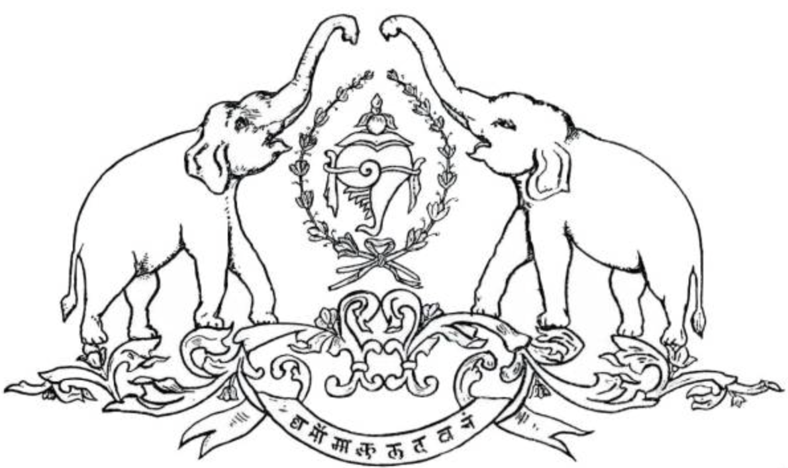
The ruling house of Kingdom of Travancore came from ancient Nayar Kings. During British Era of India, they signed a treaty in 1788. The treaty revisited in 1805 lead to loss of their authority and political independence. They exist to this day. However, their political privileges were abolished.
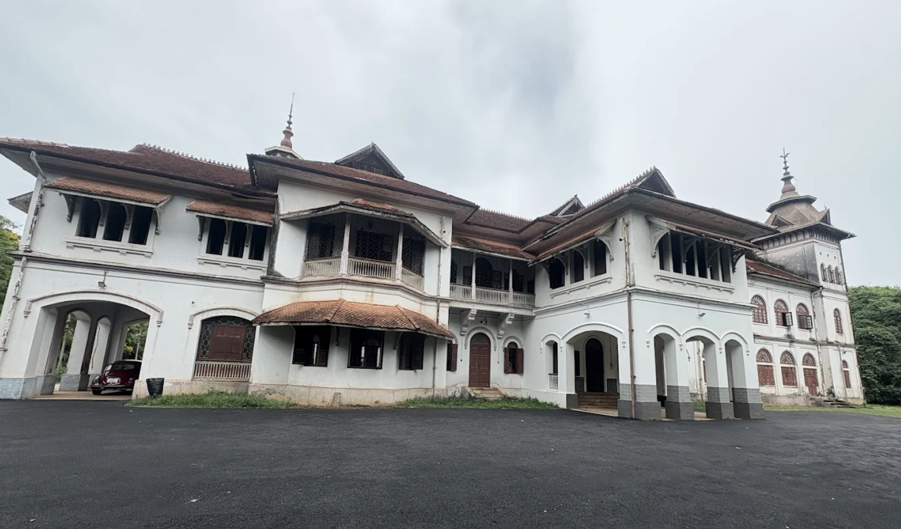
Kowdiar Palace is the official residence of the Travancore Royal Family. The Palace has over 150 rooms and it’s located in Trivanduram.Nayars in 20th century
Accounts, Photographs from CJ Fuller’s work from his study.
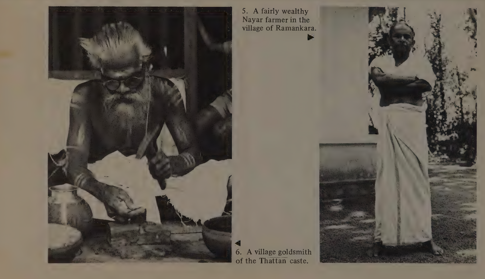
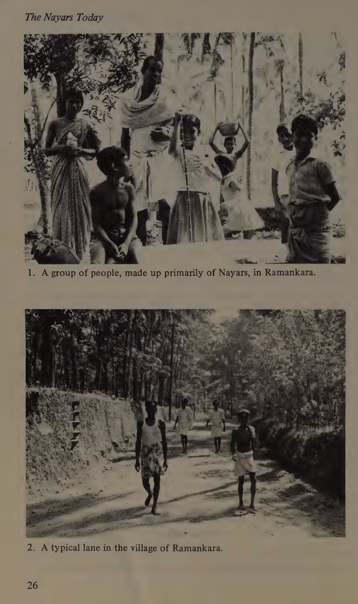
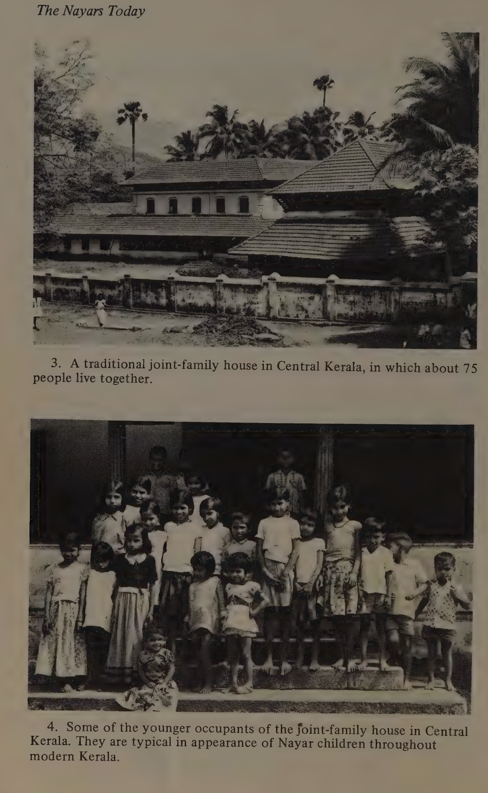
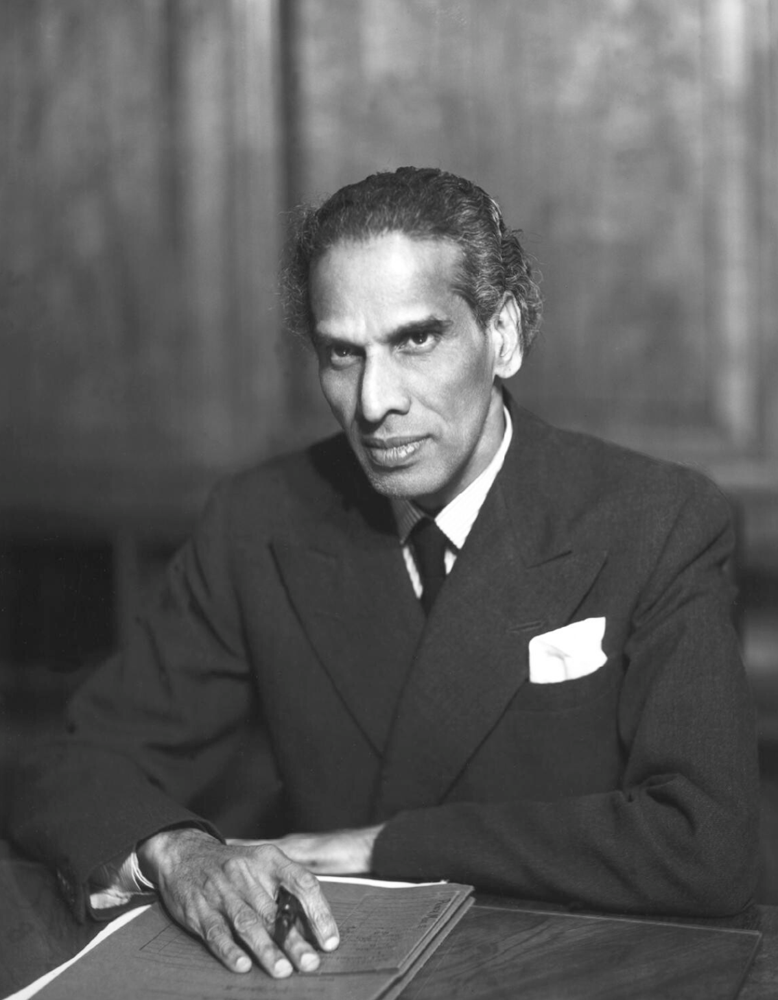
Vengalil Krishnan Krishna Menon, one of the most celebrated Nayars from 20th century, (1896- 1974). He was an Indian academic, independence activist, politician, lawyer, and statesman. He contributed to the Indian independence movement and India’s foreign relations. He was among the major architects of Indian foreign policy and India’s Defense Minister.
Nayars in 21st century
Mohanlal Viswanathan (1960– ) is one of the most widely recognized figures in Malayalam cinema and a prominent public personality associated with the Nair community in contemporary Kerala. His presence here is best understood not as evidence of caste continuity in any direct historical sense, but as an illustration of how Nair visibility continues in modern cultural life through domains very different from the older structures of land, matriliny, and regional dominance.
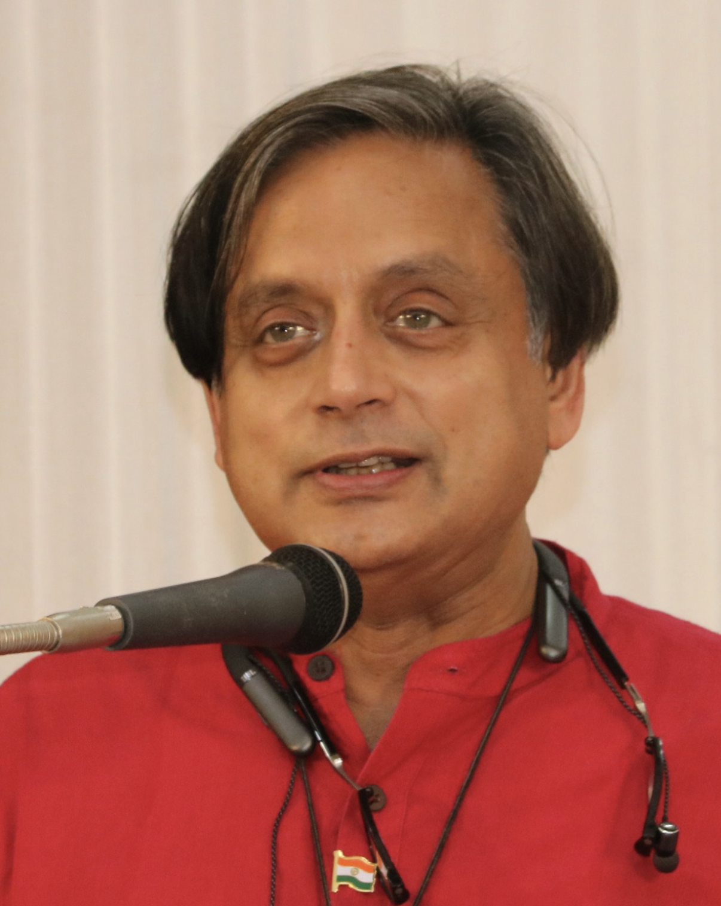
Shashi Tharoor (1956– ) represents another contemporary example of Nair prominence in public life, though in a very different register from earlier landed or kinship based status. His career in diplomacy, writing, and parliamentary politics reflects the shift from caste power rooted in property and local hierarchy to visibility achieved through education, language, national institutions, and media presence.
Social Change and the Decline of Older Institutions
According to Fuller[1], the biggest single shift was the breakdown of the matrilineal taravad as the main social and economic unit. Earlier, the taravad was the joint family, property group, and lineage unit all at once; later, taravads split, smaller households emerged, property stopped being held jointly, and inheritance became increasingly bilateral and individual. Fuller is very explicit that the development of individual property in land was the most significant change. Once men and women owned transferable property as individuals, the old taravad lost its structural base.
The second biggest shift was the transformation of marriage, from the older tali rite plus sambandham, polyandrous pattern into a more monogamous, stable, husband-wife marriage. Fuller says that after the disbanding of the Nayar armies, men were no longer constantly away, and this likely strengthened the bond between men and their sambandham partners.
The third biggest shift was the movement from a matrilineal social logic to a more affinal and paternal one. In simpler terms, the center of social life moved away from the sister’s line, the maternal uncle, and the taravad, and toward the wife, children, father-child tie, and nuclear household. Fuller treats this as both a material and ideological change. The author says, Nayars faced economic threat posed by the Syrian Christians in Central and northern Travancore. It was fairly clear that the Syrians’ success was principally due to their position in the trading sector. Although lack ing a monopoly, they did control a large proportion of local trade in the region around 1850 [3], as they had indeed done for many years [1].
Their entrenched position in this sector gave them a differential advantage in the growing economy over other communities, in particular their main rivals the Nayars, not only in terms of know how and experience, but also in access to finance, much of which was raised through the indigenous credit societies known as chitties and kuris. As the Syrians grew richer, they began to buy land mainly from Nayars. Being the major landholding community in the country, the Nayars were bound to suffer a relative decline when a lower ranking community, such as the Syrians, rose. The prospect of losing their land seems to have seriously frightened the Nayars: ‘the most concrete and alarming manifestation of Syrian prosperity was their acquisition of land’ [3]. In fact, there was an element of panic in the Nayars reaction to growing Syrian wealth. Jeffrey points out that, Syrians had by no means completely supplanted Nayars as the economic power in the state’ and the Nayars were not about to be swept away.
In that setting, the old Nayar landed-matrilineal order could no longer reproduce its earlier dominance. What declined, therefore, was not simply one marriage pattern, but an entire social structure linking caste rank, land, kinship, and power [3] [1].